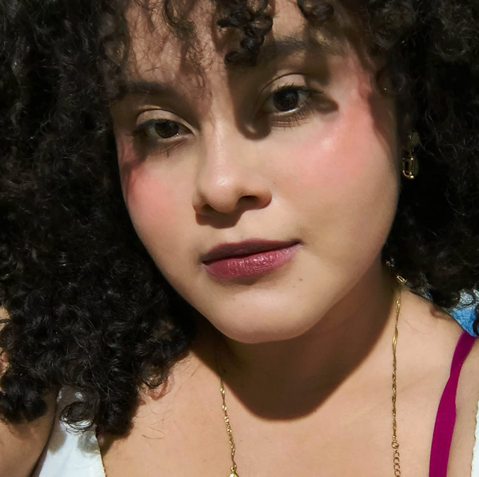

Alejandra Pamela Gutiérrez Erazo
Cosas sobre mí
¿Quién es Pame?
Empezando por que tengo 20 años, en Junio de este año cumplo 21 actualmente curso cuarto año de Diseño Gráfico multimedia,sobre mis gustos personalidad y más, pues soy divertida, auténtica, expresiva y hasta un poco parlanchina.
Pero también soy una persona que disfruta de su soledad y su espacio íntimo disfrutando de películas el cual es mi diversión favorita amo pasar horas enteras viendo pelis de cualquier genero, personajes, historias y de todo, tengo un perfil de Letterboxd el cual es una app para calificar, reseñar, agregar pelis o perfiles en distintas partes del mundo y me encanta pasar tiempo leyendo las diferentes ideas de todo el mundo en diferentes idiomas. En mi perfil tengo 1,068 pelis y 40 ya son de este año.
En mi biografía pues también me encanta pasar tiempo con mis padres, hermana, abuelos y mis amigos y me parece tiempo de calidad.
En gustos mas especifícos pues amo el cafe negro de pozol y cualquier otro ingrediente del que se le agregue me parece extraño ya que el cafe en su solitario ingrediente se disfruta mejor, me encanta leer libros de ficción y fantasía , me encanta practicar a mannejar ya que disfruto de la música a mucho volumen. En cuestión de música me encanta el rock, clásico, indie, alternativo,psicodelico, punk y cualquier variante del rock mi banda favorita es Arctic Monkeys los cuales han sido grandes populsores de rock indie/alternativo por casi 25 años.
Para mí nombre profesional proximamente para portafolio será: PAM PAM
Estudios Realizados
Kinder a palvularia: Centro Escolar General Franciso Menendez, Atiquizaya 2007-2009
Primer grado a Segundo año de Bachillerato: Complejo Educativo Católico "Santa Teresita", Atiquizaya 2010-2021
Educación Superior: Universidad Autónoma de Santa Ana, UNASA 2022-Actualidad

INSTAGRAM
Página 2
Página 3
Página 4